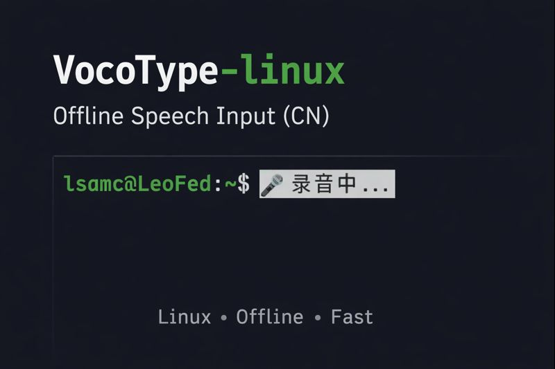

不上传任何数据
FunASR Paraformer 在本机完成识别；声音、草稿和输入框上下文都无需离开设备。
VocoType-linux 把按键说话变成真正的系统级中文输入：完全离线、纯 CPU 运行，并原生接入 macOS InputMethodKit、IBus 与 Fcitx 5。

音频和文本始终留在本机。
识别完成后快速提交文字。
ASR 峰值内存，无需独立显卡。
InputMethodKit、IBus 与 Fcitx 5。
桌面应当在本地听懂你
很多语音输入只是网页服务外面套了一个麦克风按钮。VocoType-linux 是真正的桌面输入工具：在本地录音、识别，并通过平台原生输入框架把文字直接提交到当前应用。
FunASR Paraformer 在本机完成识别；声音、草稿和输入框上下文都无需离开设备。
聊天窗口、编辑器、浏览器、终端与 AI 工具，都通过平台原生输入框架接收文字。
面向普通 Linux 与 Apple Silicon 笔记本、台式机优化，内存占用适中，不要求独立显卡。
最新进展
v5.0.1 补丁加强麦克风设备解析，并让 macOS 临时开发应用不再污染 Spotlight 搜索结果。
保存的旧音频设备索引不再抢占当前解析出的麦克风，同时 macOS 临时开发构建也不会再作为重复应用出现在 Spotlight。
前往 Release →检查运行环境与安装状态、比较版本、实测完整链路，并通过官方反馈流程提交经过脱敏的支持包。
查看更新 →在兼容应用中使用同一套 Ctrl+F9 指令完成替换、插入、删除、导航、改写和撤销重做。
查看更新 →可选在说话期间持续更新可变 preedit，松键后仍由完整离线识别链路提交最终结果。
查看更新 →边界清晰的本地流水线
每个阶段只承担明确职责。可选的语言模型润色位于语音识别之后，也可以完全关闭。
按住 F9 开始说话，内容说完后松开按键。
本地采集音频，并通过语音活动检测提取有效语段。
FunASR Paraformer 在 CPU 上识别中文和中英混合语音。
InputMethodKit、IBus 或 Fcitx 5 把最终结果写入当前获得焦点的应用。
三种交互模式
追求速度时直接听写；写长句时选择可选润色；需要修改已有文字时，直接用语音下达编辑命令。
从语音到文字的最短路径，不经过语言模型后处理，尽可能降低延迟。
仅 ASR可将较长的识别结果交给本地模型或 OpenAI 兼容接口，补标点并清理表达。
可选 SLMmacOS、IBus 与 Fcitx 5 均可读取兼容输入框上下文，通过语音完成替换、插入、删除、导航、改写和撤销重做。
MACOS + IBUS + FCITX 5真实桌面工作流
演示中的 VocoType 直接运行在普通 Linux 应用里，而不是要求你先打开一个专门的转写窗口。
来自 Linux 社区
摘自 VocoType Linux 在 Linux.do 的公开讨论，保留用户原话与公开用户名。
“这个太强了，正好弥补 Linux 没有开源语音输入法的痛点。
“太强了，一直有做这个的想法，迟迟没落地，没想到佬已经实现了。前排体验一波。
“感谢佬，我用下来感觉非常舒服，除了微信里面输入有点问题外，其他场景都很好用。
桌面框架集成
三个原生前端共享同一套语音识别核心，同时分别遵循 InputMethodKit、IBus 与 Fcitx 5 的协议。
适合 Apple Silicon、macOS 13 或更高版本。
适合 GNOME，以及默认采用 IBus 的 Linux 发行版。
适合 KDE，以及偏好模块化 Fcitx 5 生态的用户。
原生发行资产
macOS 将 App 拖入 Applications 后自动安装输入法；Linux 原生包安装应用与系统集成。两端都在设置中心完成模型、音频、AI 与词典配置。
1. 下载 VoCoType-linux-5.0.1-macOS-arm64.dmg 2. 拖入 Applications 3. 首次启动自动安装 InputMethodKit 组件下载 macOS DMG →
# Debian / Ubuntu sudo apt install ./vocotype-linux_*.deb # Fedora / RHEL sudo dnf install ./vocotype-linux-*.rpm # Arch Linux sudo pacman -U ./vocotype-linux-*.pkg.tar.zst前往 GitHub Releases 下载 →
$ git clone https://github.com/LeonardNJU/VocoType-linux.git $ cd VocoType-linux $ bash scripts/install/fcitx5/install.sh --install-system-deps --download-models查看完整安装文档 →
macOS 13+ Apple Silicon 或主流 Linux · 最低 4 GB 内存 · 纯 CPU 推理 · 运行时不需要 Python